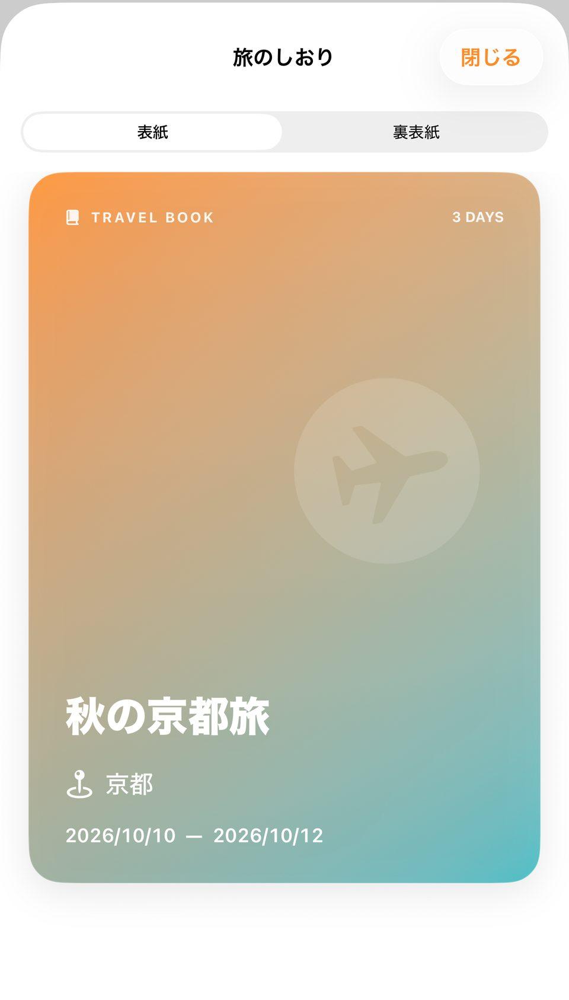
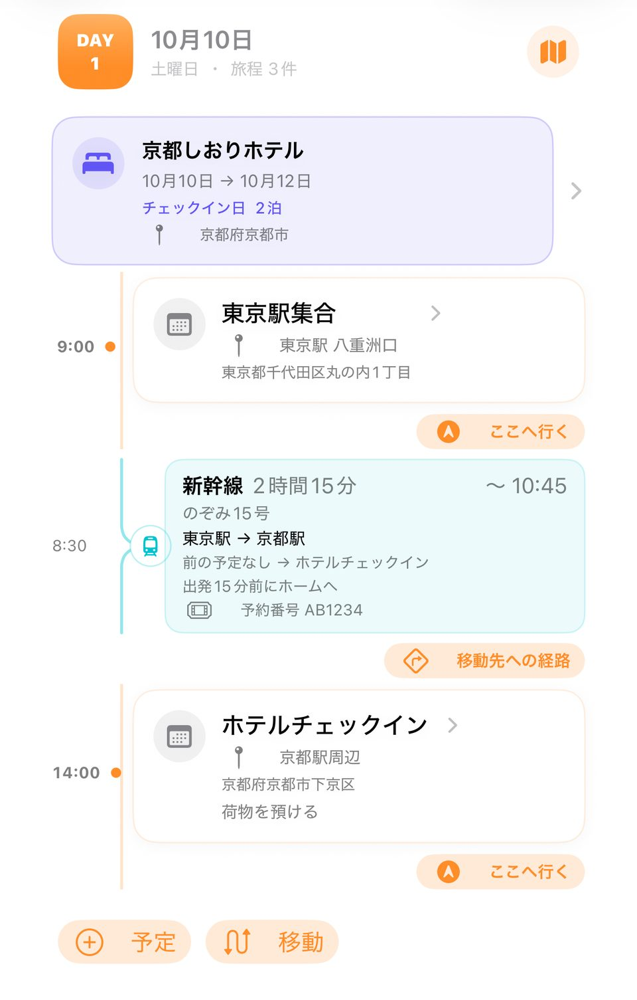
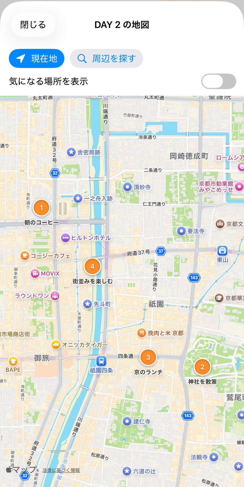
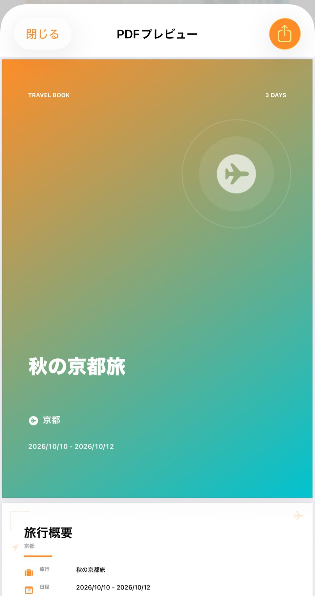

STEP 1
旅行のタイトルと日程を決める
旅行一覧の右上にある「＋」を押し、タイトル、開始日、終了日を入力して「保存」。保存後、旅行ごとの表紙とDAYが表示されます。
画像：架空の「秋の京都旅」を作成した後の表紙

WHAT YOU CAN DO
旅の計画から、出発前の準備、完成したしおりの共有まで。
GETTING STARTED
まずは旅行を作り、DAYごとに予定を増やしていきます。必要な情報から少しずつ登録できます。
旅行一覧の「＋」から、タイトルと開始日・終了日を入力して保存します。行き先とメモは任意です。
旅行を開き、該当DAYの「予定」から開始時間とタイトルを登録します。場所は手入力または検索で選べます。
各DAYの「移動」から交通手段を追加。宿泊先は「宿泊」から登録します。
DAYの地図ボタンで予定の位置を確認。上部の「場所」「持ち物」「予算」から出発前の情報もまとめられます。
旅行詳細のPDFボタンを押すとプレビューが開きます。右上の共有ボタンから「ファイルに保存」などを選べます。
STEP 1
旅行一覧の右上にある「＋」を押し、タイトル、開始日、終了日を入力して「保存」。保存後、旅行ごとの表紙とDAYが表示されます。
画像：架空の「秋の京都旅」を作成した後の表紙

STEP 2–3
DAY見出しの下に宿泊先が表示されます。DAY末尾の「予定」「移動」から追加してください。予定はタイトルと開始時間を入力でき、移動は交通手段や出発・到着情報を登録できます。
画像：DAY 1の旅程。宿泊、予定、移動が同じ流れに表示されます

STEP 4
DAY見出しの地図アイコンを押すと、その日の位置情報付き予定を地図上で確認できます。「場所」では気になる場所を保存できます。位置情報がない予定は地図に表示されません。
画像：DAY 2の地図

STEP 4
旅行詳細の「持ち物」で準備済みをチェック。「予算」では項目ごとに予定額・実績額を登録し、合計を確認できます。
画像：持ち物と予算の画面
STEP 5
旅行詳細の右上にあるPDFボタンからプレビューへ。共有ボタンを押し、iOSの共有先から保存先を選びます。PDFは作成するだけでは「ファイル」アプリへ自動保存されません。
画像：PDFプレビュー

VIDEO GUIDE
再生ボタンを押したときだけ動画を読み込みます。音声・BGMはありません。
FAQ
旅行の内容は原則として端末内に保存されます。アプリにはCloudKit・iCloudによる旅行データの自動同期機能はありません。端末の変更・アプリの削除前は、必要な旅行をPDFで保存してください。PDFは閲覧用で、アプリへ旅行データを復元する機能はありません。
いいえ。アプリ内にアカウント登録・ログイン機能はありません。
保存済みの旅行内容の確認・編集には、通常は接続を必要としません。地図の読み込み、場所検索、広告、外部ページの表示などには接続が必要な場合があります。
ユーザーが現在地を使う操作をしたとき、DAY地図での現在地表示や周辺検索などに使用します。現在地の履歴を旅行データとして保存する機能はありません。位置情報を許可しなくても、旅行の作成や閲覧は利用できます。
選択した表紙・予定の写真は、表示に適したサイズに処理して端末内のアプリ領域へ保存します。写真ライブラリ全体を読み取る機能はありません。
PDFはプレビュー用に一時ファイルとして生成されます。残しておきたい場合は、共有ボタンから「ファイルに保存」など保存先を選んでください。
旅行一覧にはGoogle AdMobのバナー広告が表示される場合があります。旅行詳細や編集画面には表示しません。地域などに応じた同意確認にはGoogle UMPを使用します。詳しくはプライバシーポリシーをご覧ください。
こちらのお問い合わせフォームからご連絡ください。旅行データや写真などの個人情報は、必要がなければ送らないでください。
PRIVACY
旅行データや写真、位置情報、広告・同意管理の取り扱いは、公開中のポリシーでご案内しています。
プライバシーポリシーを見る